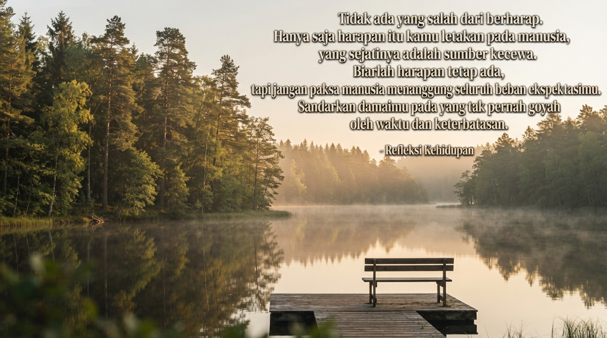
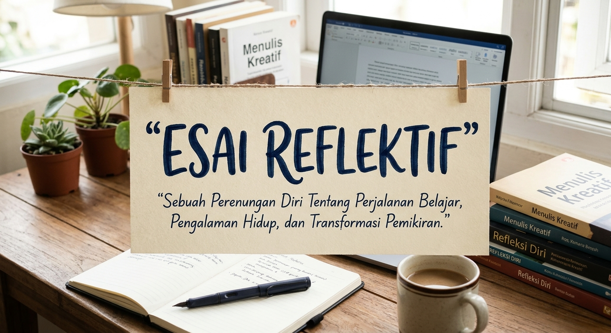

Tidak ada yang salah dari berharap. Hanya saja harapan itu kamu letakkan pada manusia, yang sejatinya adalah sumber kecewa


Beberapa baris Esai Reflektif tentang realitas, rasa, dan jeda. Dibuat untuk dibaca perlahan, direnungkan, atau sekadar menemani waktu luang Anda.
